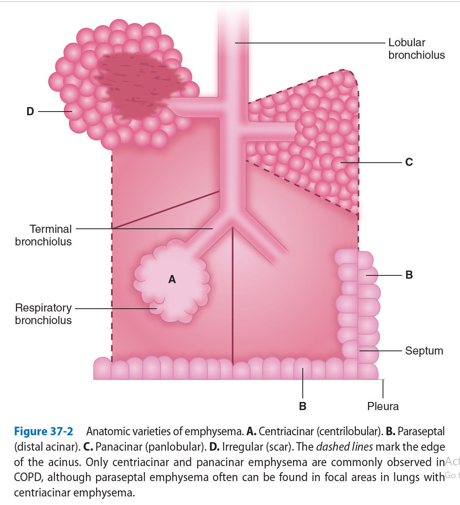
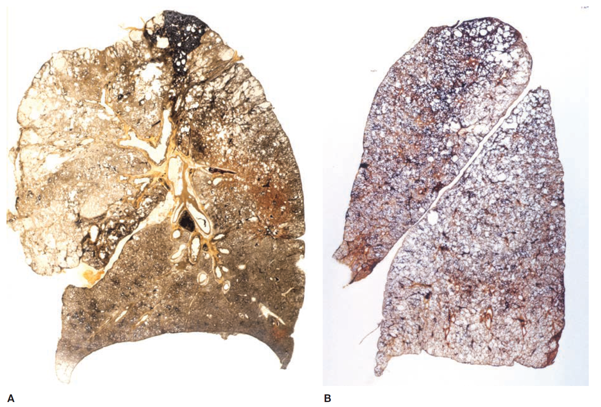
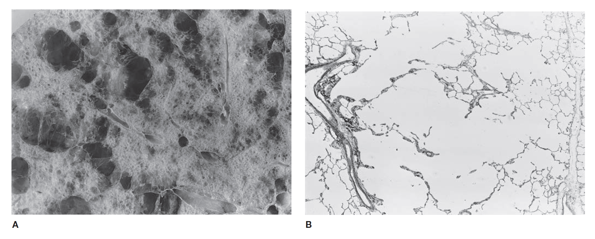
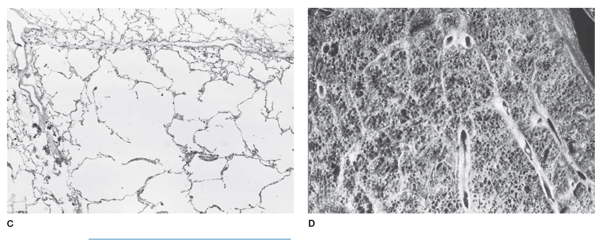
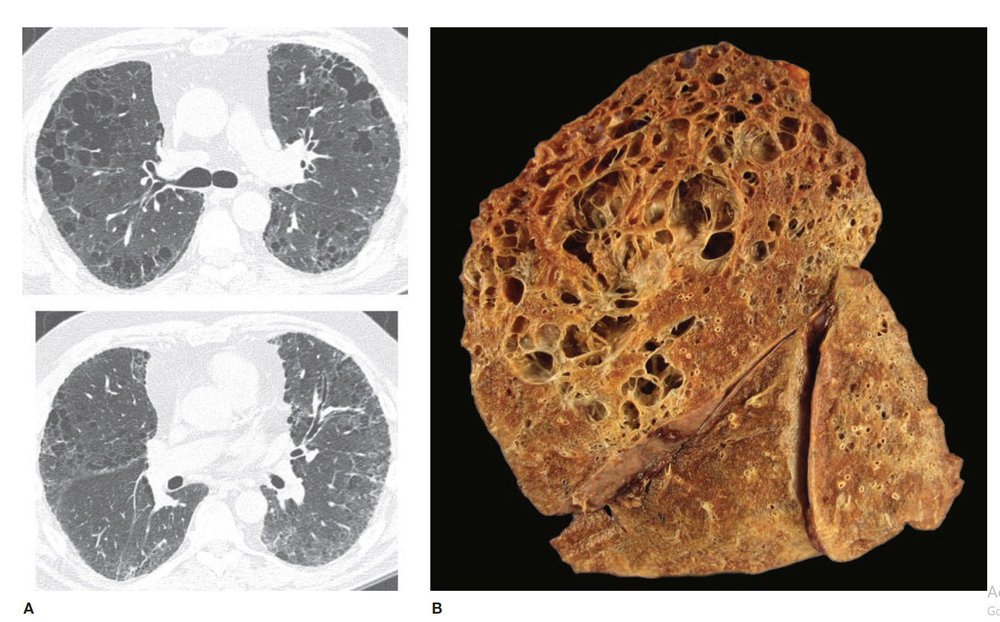
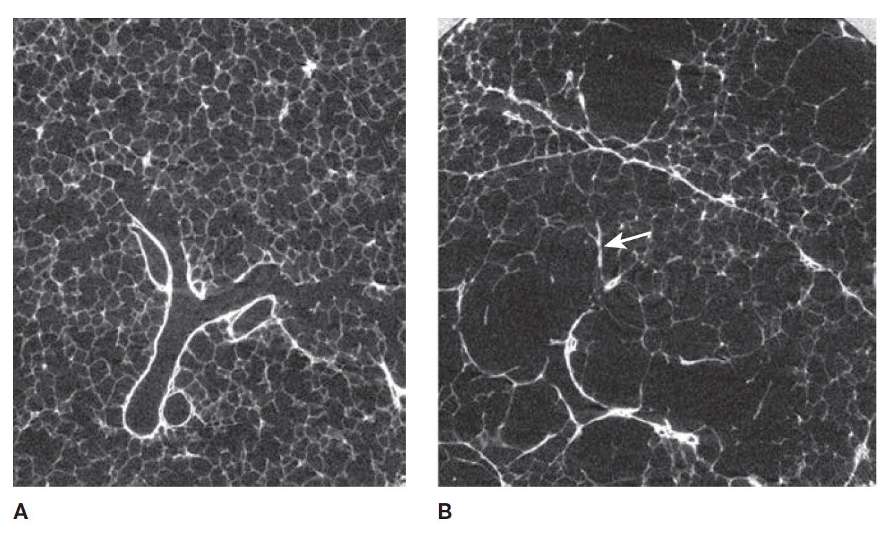

a general name for the chronic airflow obstruction that develops most often as a result of:
The pathology encompasses various lesions in:
These lesions are correlated with changes in:
Airflow obstruction is largely due to:
A major problem in describing emphysema has been the lack of a generally accepted and easy-to-apply definition.
In 1959, a Ciba Guest Symposium defined emphysema in anatomical terms:
"A condition of the lung characterized by an increase beyond the normal of airspaces, distal to the terminal bronchiole, either from dilatation or from destruction of their walls."
required destruction of respiratory tissue:
"Emphysema is a condition of the lung characterized by abnormal, permanent enlargement of the airspaces distal to the terminal bronchiole, accompanied by destruction of their walls."
This differentiates emphysema from "overinflation" (enlarged airspaces without destruction).
Destruction has been difficult to define unambiguously:
"Destruction is present when there is nonuniformity in the pattern of respiratory airspace enlargement, disturbing the orderly appearance of the acinus and its components."
Strict definitions
may eliminate airspace
enlargement due to:
However, these definitions wouldn't exclude changes due to reorganization of the airspaces such as is found in honeycomb lung.
Emphysema is classified in terms of lung structure
Is the unit of lung structure distal to the terminal bronchiole, consisting of:
Alveolar ducts are entirely alveolated and contain smooth muscle around the mouths of their alveoli.
The walls of alveolar sacs are formed entirely by alveoli, without muscle.
Pores of Kohn, or alveolar vents, are normal components of adult alveoli, facilitating collateral ventilation.
They may also be an initial site of destruction, particularly in centriacinar emphysema.
The acinus cannot be easily identified by gross examination. What can be seen instead is the secondary lobule of Miller
Defined as the tissue bounded on four sides by interlobular septa or pleura, generally 2–4 cm in size and containing 3-5 acini.
The terminal bronchiole and subtending respiratory bronchioles tend to be situated in the center of the lobule.
For this reason, “centrilobular” emphysema (CLE) and “panlobular” emphysema (PLE) are reasonable and widely used approximations for the more accurate “centriacinar” and “panacinar” emphysema

There are four recognized patterns of emphysema, depending on the involvement of the acini:
The acinus (and lobule) may be more or less uniformly involved.
Normally, the lung has a characteristic appearance under a microscope:
In panlobular emphysema, the distinction between alveolar ducts and alveoli is lost as:
As the process worsens:
Unlike centrilobular emphysema, panlobular emphysema is usually more severe in the:
The pattern is again:
When airways are obliterated, the distal lung parenchyma may:
depends on the amount of collateral ventilation between adjacent airspaces distal to unobstructed airways.
The proximal portion of the acinus (center of the lobule) may be dominantly involved.
This destructive lesion affects the respiratory bronchioles and characterized by:

Pathologic subtypes of emphysema. A. Predominantly centriacinar emphysema. Emphysema is more severe in upper lobes. B. Predominant panacinar emphysema. Emphysema is more severe in the lower lobes.
Gross and histologic sections illustrating centriacinar A. showing holes in the center of lobules surrounded by relatively normal parenchyma. The severity varies among lobules. B. showing that the airspace enlargement is most marked adjacent to the abnormal respiratory bronchiole, corresponding to the center of the lobule. Also, some of the alveolar walls of the abnormal airspaces are thickened and fibrotic.
Gross and histologic sections illustrating panacinar emphysema C. showing how the entire lobule is uniformly affected in panacinar emphysema. D. demonstrating that the airspaces adjacent to the lobular septa are enlarged to the same degree as those in the center of the lobule.Alternately, the proximal portion of the acinus may be normal, and the distal part (alveolar sacs and ducts) may be dominantly involved.
Emphysema most striking:
Irregular emphysema is named due to the irregular involvement of the acinus.
Irregular emphysema is typically found adjacent to a scar.
Conditions characterized by gas trapping, non-emphysematous airspace enlargement, honeycomb lung, and combined emphysema and fibrosis need to be differentiated from emphysema.
Gas trapping may occur in several conditions, not all related to COPD.
Although not part of the COPD differential diagnosis,nonemphysematous airspace enlargement also occurs in infancy.
The term senile emphysema was once used to describe airspace enlargement in the elderly.
Aging results in an increase in alveolar duct air volume with shallower and flatter alveoli.
When part of the lung collapses or is removed, the remaining lung can expand in a process called compensatory overinflation.
In adults, obstructive overinflation can occur with two possible mechanisms:
In both cases, the affected lung part expands significantly, but no tissue destruction occurs.
Honeycomb lung can occur in conditions like cryptogenic fibrosing alveolitis (usual interstitial pneumonia - UIP) and other fibrotic lung diseases.
It may be confused with emphysema, but has distinct characteristics.
While honeycomb spaces are enlarged airspaces, their cause is different from emphysema.
Honeycomb spaces have thickened and irregular walls, which are very different from the acinar structure seen in emphysema.
Honeycomb lung often exhibits interstitial inflammation:
The combination of emphysema and fibrosis (e.g., UIP) has been reevaluated in terms of its clinical, radiologic, and pathologic significance.
Although the definition of emphysema typically limits fibrosis, mixtures of both are commonly seen in smokers.
Smokers are at higher risk for developing:
The combination of these conditions with emphysema is not uncommon.
When emphysema is combined with UIP:
CT scans show:

Combined fibrosis and emphysema in a case of chronic (fibrotic) hypersensitivity pneumonitis. A. Computed tomography scan from upper zone (top) shows emphysema and a suggestive of reticulation; lower image from midlung zone shows extensive reticulation indicating the presence of underlying fibrosis. B. Gross photo (sagittal slice) from this case showing marked upper zone emphysema, with fibrosis evident in the most posterior portion of the upper lobe, and the posterior portions of the lower lobe.Pathology reveals:
It's still uncertain whether combined pulmonary fibrosis and emphysema represents a distinct entity or a mere clustering of two smoking-related conditions.
Most studies focus on lesions found when the clinical signs and symptoms of chronic bronchitis are present.
The gross lesions in large airways are few and subtle:
In chronic bronchitis, bronchial pits may become distended with mucus:
Small airways in COPD refer to those with an internal diameter of 2 mm or less. Key features of small airway lesions in COPD include:
- Intraluminal mucus is common in the small airways in COPD.
Small airway walls show significant alterations, including:
Airway obliteration occurs early, resulting in:

A. Micro-CT scan image of an airway from a normal lung. Note the regular progression from membranous bronchiole to respiratory bronchiole to alveolar duct. B. Micro-CT scan image of an airway from a lung with centrilobular emphysema. Note the irregular airway emptying into a centrilobular hole. Partially obliterated airway is seen at the arrow.- No consistent alterations are found in the large elastic pulmonary arteries of subjects with COPD.
- Atheromata may be present, but only in the presence of pulmonary hypertension do these changes become more common. The incidence is comparable to a matched population without COPD.
- Cigarette smokers, with or without pulmonary hypertension, exhibit: